図解：アール・ヌーヴォー
アール・ヌーヴォーの成立と展開
- 19世紀

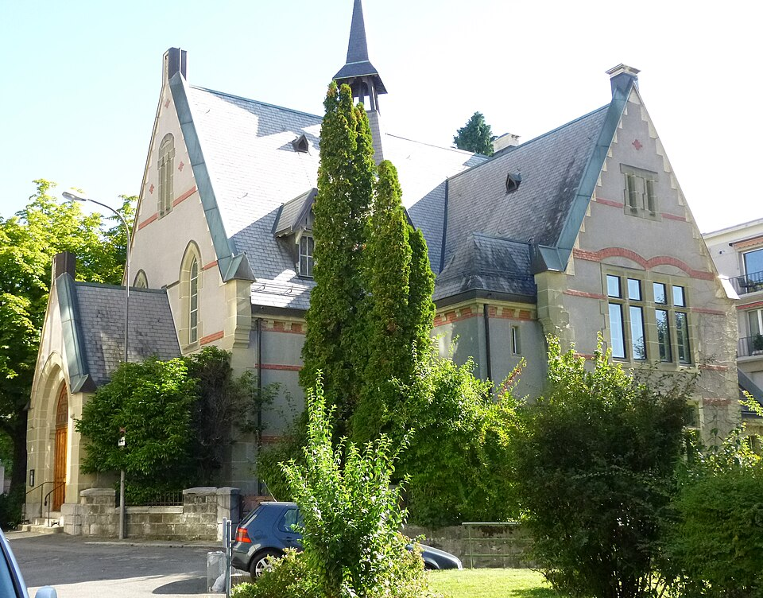
モリスとデュク手仕事と自然
中世の構造を合理化 - 1892〜93
 オルタの邸宅鉄と曲線を融合
オルタの邸宅鉄と曲線を融合 - 1895
 ビングの画廊様式名の由来
ビングの画廊様式名の由来
ヴェルデが内装 - 1898〜
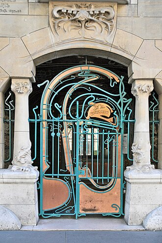
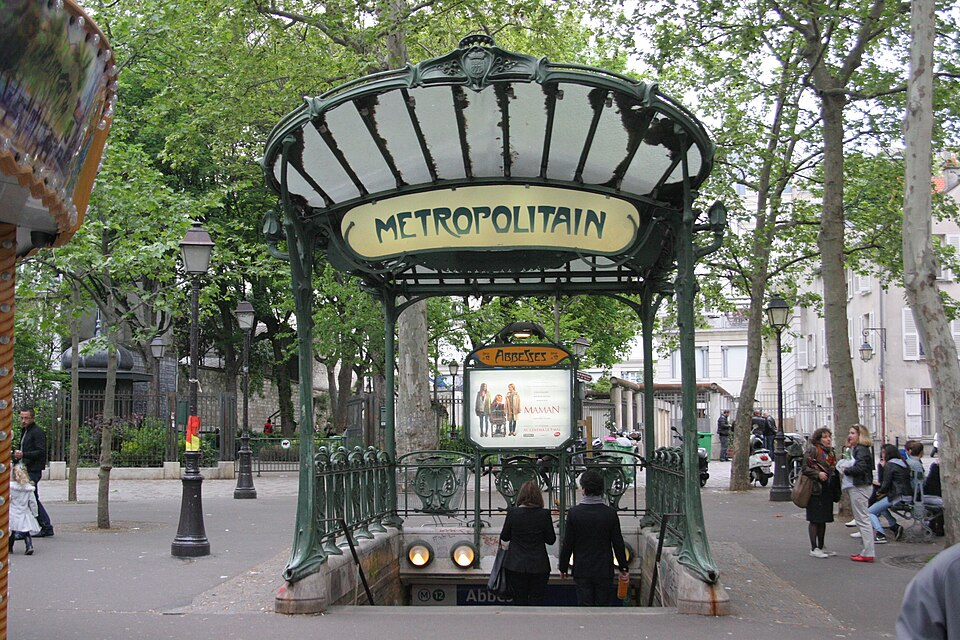
ギマールのパリコンクール受賞
地下鉄の入口 - 1900
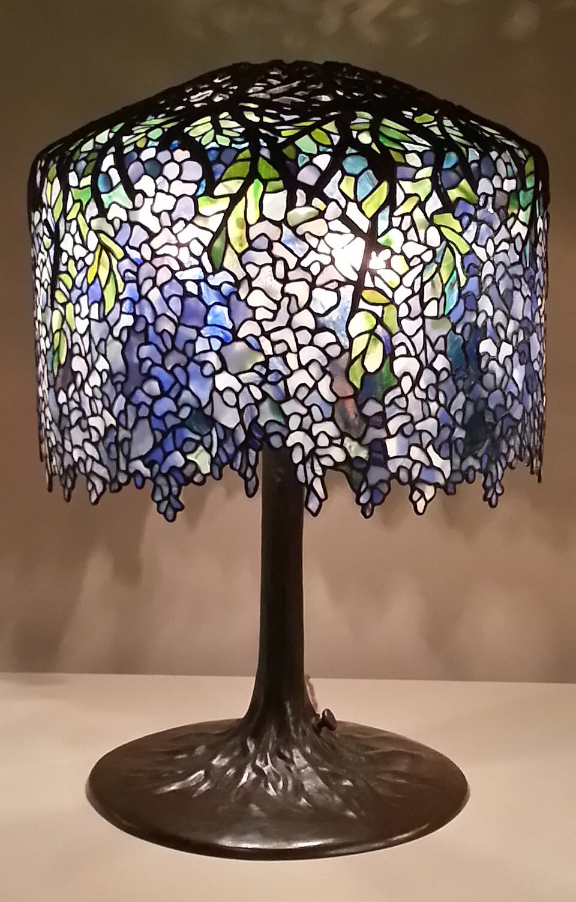
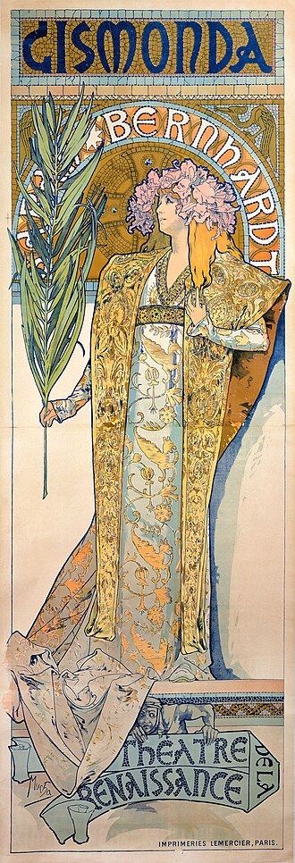
パリ万博で最盛期工芸・ポスター
日本にも広がる
それまでと何が違うか
植物などの有機的な線建築石を積み様式を模倣鉄などの新素材
細く自由な曲線が可能に工芸の地位職人は芸術家の下装飾芸術も芸術に
1891年からサロン出品
図版の出典
- ウィリアム・モリスの写真、フレデリック・ホリヤー撮影、1887年：出典（Public domain）
- 《スコッツ・カーク（ローザンヌ）》ウジェーヌ・エマニュエル・ヴィオレ＝ル＝デュク：出典（CC BY-SA 3.0）
- 《タッセル邸の階段室》ヴィクトール・オルタ：出典（Public domain）
- 書斎のアンリ・ヴァン・デ・ヴェルデの写真、1908年、撮影者不明：出典（Public domain）
- 《カステル・ベランジェの入口門》エクトール・ギマール：出典（CC BY 2.0）
- 《アベス駅のギマール式入口》エクトール・ギマール：出典（CC BY 2.0）
- 《藤のテーブルランプ》ティファニー工房（意匠：クララ・ドリスコル）：出典（CC BY-SA 4.0）
- 《ジスモンダ》アルフォンス・ミュシャ：出典（Public domain（PD-Art／PDM））
重要人物
源流となった人
建築家
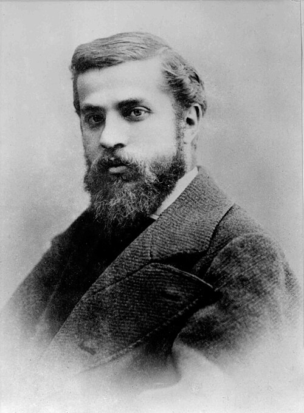
アントニ・ガウディ建築家木のように枝分かれする柱を建築に生かす- ヴィクトール・オルタ建築家タッセル邸で鉄と自由な曲線を融合
- アンリ・ヴァン・デ・ヴェルデ建築家ビングの画廊の内装は酷評。後にドイツへ
- エクトール・ギマール建築家カステル・ベランジェと地下鉄駅入口
工芸家
ポスターの画家
- アンリ・ド・トゥールーズ＝ロートレック画家パリの歓楽街のポスターで街を彩る
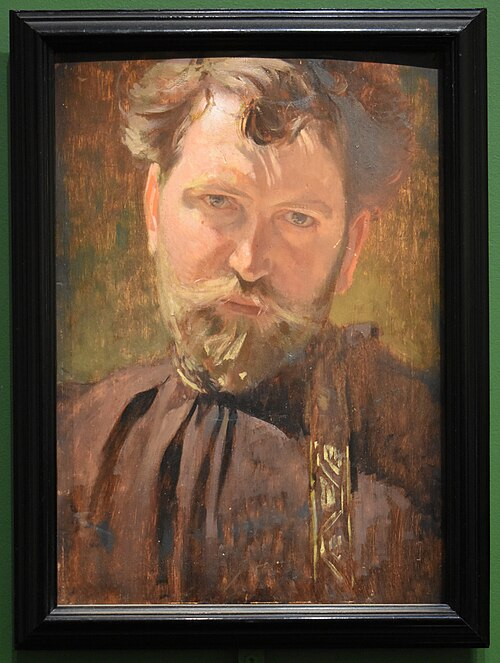
アルフォンス・ミュシャ画家サラ・ベルナールのポスターで旗手に- サラ・ベルナール女優ミュシャのポスターに描かれる
広め、評価した人
アール・ヌーヴォーとは
モリスの精神を継ぐ新しい芸術
動画 1:49～1890年代を中心に栄えたアール・ヌーヴォーは、アーツ・アンド・クラフツの精神を引き継ぐデザイン運動です。ラスキンの著作に影響されたモリスは、産業革命の機械生産に反発して中世の手仕事へ立ち返り、自然の主題、伝統的な家具、土地の素材を見直しました。
その運動の「失敗」とは、商業的に売れず評価されなかったという意味ではありません。よい品を手作りで広く届けるという理想が、制作時間と天然素材へのこだわりによって価格を上げ、一部の富裕層だけの需要を満たす結果になった、という意味です。晩年の『チョーサー著作集』は、職人の年収三年分ほどの価格だったといいます。それでも、よい品を普及させる精神や、機械化の陰に追いやられた職人の存在を再評価した功績は大きなものでした。
 画像を拡大 ＋
画像を拡大 ＋
《ケルムスコット版チョーサー著作集（白豚革装丁）》
- 作者
- ウィリアム・モリス、T・J・コブデン＝サンダーソン／ダヴズ・バインダリー
- 制作時期
- 1896年刊行／1899年装丁
- 所在地・所蔵
- ボドリアン図書館（Broxb.67.7）
- 素材・形式
- 書籍・装丁
出典・画像について
1896年刊行と1899年の白豚革装丁を区別。
画像出典：Bodleian Libraries, University of Oxford
CC BY 4.0
作品情報：作品・画像・利用条件
制作メモ
配信画像は低解像度です。
その精神を継ぐのがアール・ヌーヴォーです。ベルギーの美術雑誌『ラール・モデルヌ』では、1894年にエドモン・ピカールがこの語を用いました。フランスへ広めたのは美術商ジークフリート・ビングで、1895年開設の画廊「メゾン・ド・ラール・ヌーヴォー」に由来します。フランス語でアールは芸術、ヌーヴォーは新しいという意味です。
有機的な曲線と各国への広がり
動画 4:01～アール・ヌーヴォーの特徴は植物などの有機的な曲線と、職人の手作りを重視したことです。のびやかな曲線は、無機物の冷たさを感じさせない温かい表現を生みました。一方、鉄などの新素材を使うことには抵抗が少なく、革新的な手作りのデザインを、依頼主の意向にも合わせ、比較的手頃な価格で提供しようとしました。
フランスだけの運動ではありません。ドイツではユーゲントシュティール、イタリアではスティーレ・リバティ、イギリスではモダン・スタイルなどと呼ばれました。アール・ヌーヴォーという呼称が広まるのは1950年代で、当時はスティル・モデルヌとも呼ばれています。各国の万国博覧会で革新的な技術が展示されたことも普及を後押ししました。ここでは主にフランスを軸に、その建築、工芸、ポスターへの広がりをたどります。
建築理論と自然の構造
ヴィオレ＝ル＝デュクの建築理論
動画 5:25～19世紀半ばのフランスでは、マドレーヌ寺院に代表される新古典主義建築が主流でした。左右対称で、数学的に計算された建築が規範となる中、異議を唱えたのがヴィオレ＝ル＝デュクです。古典建築の価値を認めながらも、それはギリシャやイタリアのもので、自国に根付く様式ではないと考えました。

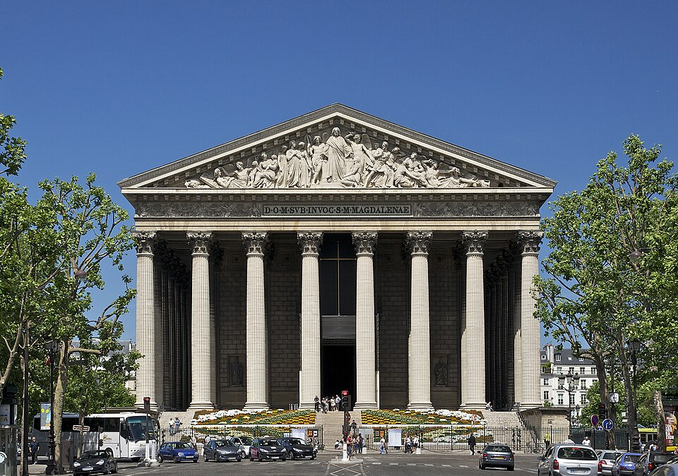
画像を拡大 ＋《マドレーヌ寺院》
- 作者
- ピエール＝アレクサンドル・ヴィニョン、ジャン＝ジャック＝マリー・ユヴェ
- 制作時期
- 1842年完成
- 所在地・所蔵
- パリ
- 素材・形式
- 建築
出典・画像について
作品情報：作品・画像・利用条件
そこで注目したのが、北フランスのサン・ドニ修道院から始まったゴシック建築です。研究がまだ十分進んでいなかった中、多くの修復を手掛け、その知識を『中世建築辞典』にまとめました。単なる懐古ではなく、修復から構造上の欠点を見抜き、特徴を保ちつつ、新素材で耐久性を高めるなど、合理的な改善を考えた点が特徴です。

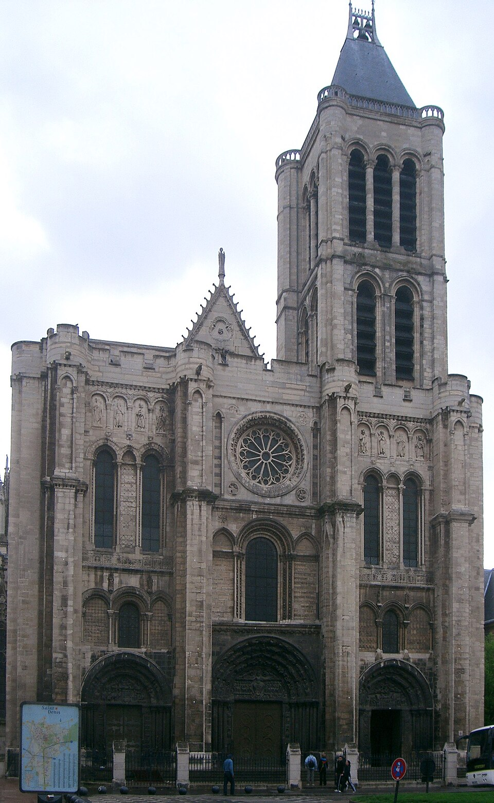
画像を拡大 ＋《サン・ドニ大聖堂（旧修道院聖堂、西正面）》
- 作者
- 中世の建築工房、建築家名不詳
- 制作時期
- 西正面・内陣1135～1144年、身廊1231年以降
- 所在地・所蔵
- サン・ドニ、フランス
- 素材・形式
- 建築
出典・画像について
画像出典：Beckstet
CC BY-SA 3.0
作品情報：作品・画像・利用条件
中世への回帰という点ではラスキンに似ていますが、重視するものは異なります。ラスキンは中世の精神性に価値を置いた一方、デュクは中世の構造を合理的に捉え、現代の素材や技術と統合しようとしました。実践的な考えは修復だけでなく自らの設計にも現れ、新素材で耐久性や機能性を高めました。石を積んで過去の様式を模倣するだけの時代から、建築を切り離したといえます。

《スコッツ・カーク（ローザンヌ）》
- 作者
- ウジェーヌ・エマニュエル・ヴィオレ＝ル＝デュク
- 制作時期
- 1876～1877年
- 所在地・所蔵
- ローザンヌ、スイス
- 素材・形式
- 建築
出典・画像について

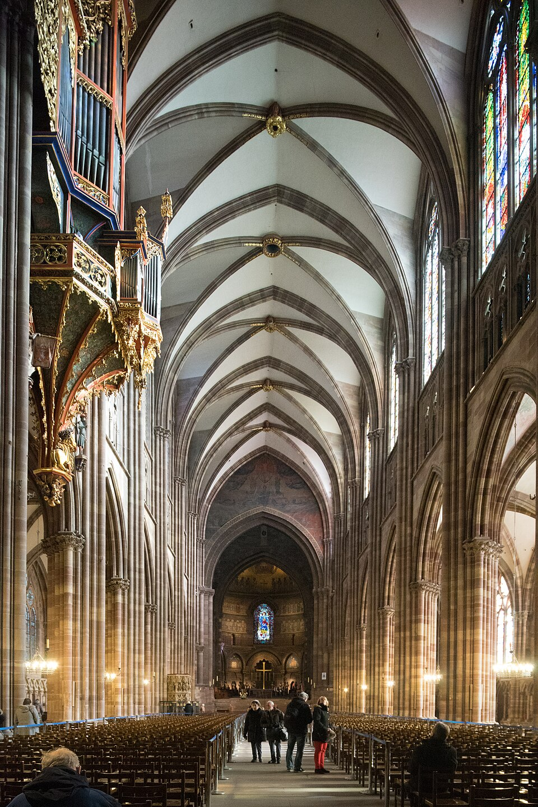
画像を拡大 ＋《ストラスブール大聖堂・身廊》
- 作者
- 中世の建築工房、複数の建築家
- 制作時期
- 主に13世紀
- 所在地・所蔵
- ストラスブール、フランス
- 素材・形式
- 建築
出典・画像について
画像出典：Pedro J Pacheco
CC BY-SA 4.0
作品情報：作品・画像・利用条件
自然の構造を生かすガウディ
動画 7:34～ヴィオレ＝ル＝デュクの理論に影響を受けた一人が、スペインのアントニ・ガウディです。サグラダ・ファミリアを最初から担当したわけではありませんが、引き継いだ後の設計には独創性がよく現れます。自然を観察し、木のように枝分かれする柱を建築へ生かしました。柱は真っすぐであるべきという固定観念にとらわれず、自然の中に合理的な構造を探した姿勢は、ゴシックを合理的に読み直すデュクの考えとつながります。曲線を多用するその建築は、スペインのモデルニスモの代表例とされます。

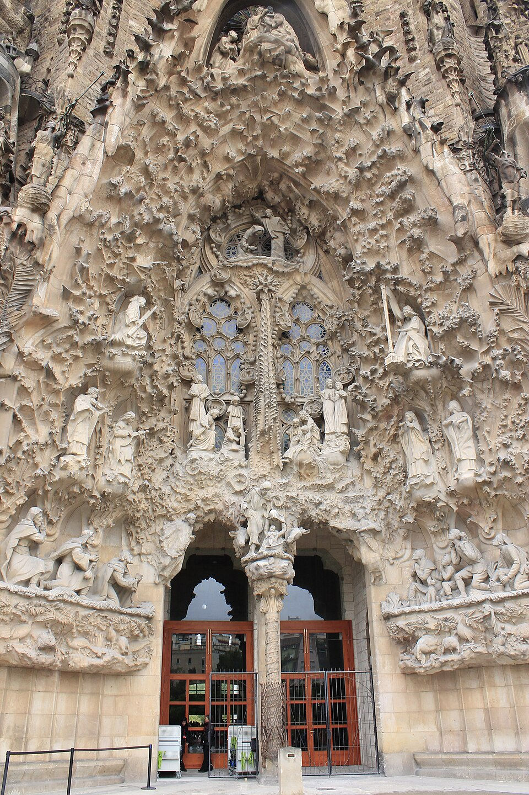
画像を拡大 ＋《サグラダ・ファミリア、生誕ファサード入口部分》
- 作者
- アントニ・ガウディほか
- 制作時期
- 1882年着工、ガウディ担当1883～1926年、以後継続建設
- 所在地・所蔵
- バルセロナ
- 素材・形式
- 建築
出典・画像について

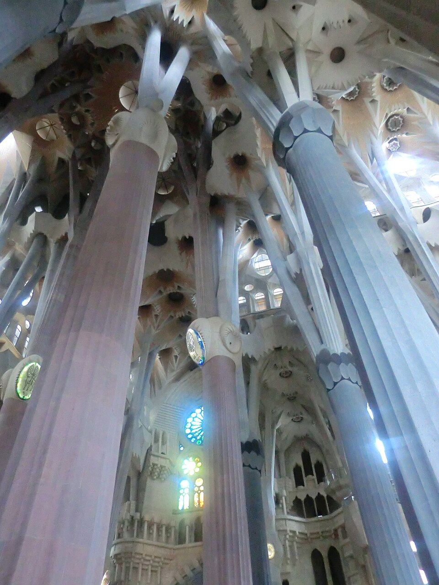
画像を拡大 ＋《サグラダ・ファミリア内部》
- 作者
- ガウディの設計を継承した建設
- 制作時期
- 1882年着工、内部は後世の継続建設を含む
- 所在地・所蔵
- バルセロナ
- 素材・形式
- 建築
出典・画像について
鉄と曲線の建築
鉄が可能にした自由な形
動画 8:20～1890年代には、デュクの理論から影響を受け、新素材を使う建築家が現れました。ベルギーのヴィクトール・オルタと、フランスのエクトール・ギマールです。石積みの建物に鉄を融合させたのは、耐久性のためだけではありません。鉄は加工によって自由な形を作りやすいため、細く曲線的な部材を実現できました。新素材と曲線の融合が、アール・ヌーヴォー建築を生んだのです。
フランスでは既に鉄が建築に使われていました。1889年パリ万国博覧会のためのエッフェル塔は、鋳造などで自由な形を作れる鉄の性質を生かし、当時世界一高い建築物としてパリの象徴になります。しかし、むき出しの鉄の構造を美しくないと考え、巨大な塔に反発する人もいました。

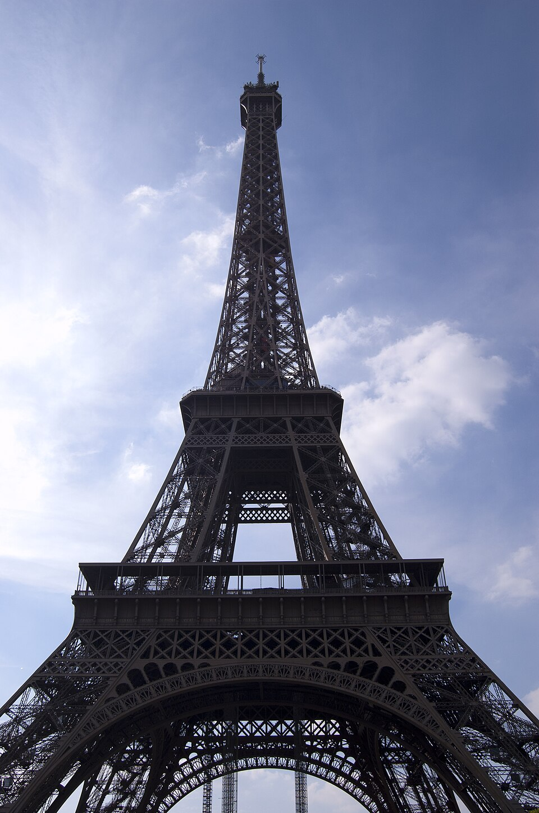
画像を拡大 ＋《エッフェル塔》
- 作者
- ギュスターヴ・エッフェルの会社
- 制作時期
- 1887～1889年
- 所在地・所蔵
- パリ、シャン・ド・マルス
- 素材・形式
- 建築
出典・画像について
画像出典：Wouter Engler
CC BY-SA 4.0
作品情報：作品・画像・利用条件
オルタのタッセル邸
動画 9:35～新素材を使いながら周囲の景観へ調和する建築は、隣国ベルギーで現れます。オルタが大学教授タッセルのために設計したタッセル邸は、最初期のアール・ヌーヴォー建築として知られます。外観に違和感なく鉄を組み込み、内部にも自由な曲線の主題をふんだんに用いました。

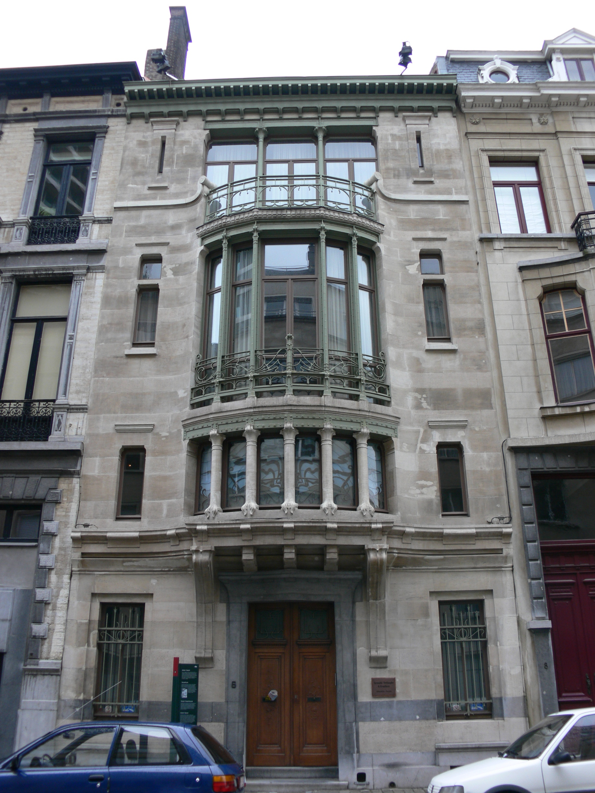
画像を拡大 ＋《タッセル邸（外観）》
- 作者
- ヴィクトール・オルタ
- 制作時期
- 1892～1893年
- 所在地・所蔵
- ブリュッセル
- 素材・形式
- 建築
出典・画像について
ヴィクトール・オルタ設計のタッセル邸の現存する正面外観。2008年撮影。
画像出典：François BERNARDIN / Wikimedia Commons
CC BY 3.0
作品情報：画像出典・利用条件 · 作品・画像・利用条件 · 作品照合資料
画像を拡大 ＋
《タッセル邸の階段室》
- 作者
- ヴィクトール・オルタ
- 制作時期
- 1892～1893年
- 所在地・所蔵
- ブリュッセル
- 素材・形式
- 建築
出典・画像について
画像出典：Henry Townsend
Public domain
作品情報：作品・画像・利用条件
オルタはベルギー出身ですが、初期にはパリのモンマルトルで学び、先進的な芸術を身に付けました。ベルギーでは、イギリスやフランスに少し遅れてアカデミーへの反発が起こり、1883年から約十年間続いた二十人展などに前衛的な傾向が現れます。地理的に英仏の影響を受けやすく、ドイツも含めた周辺国へ文化的に追い付こうとする気運は、フランスでは賛否の分かれたデュクの理論を受け入れやすくしました。アーツ・アンド・クラフツの植物的な主題と、それを形にできる新素材が結び付いたのです。
ヴァン・デ・ヴェルデとパリの批評
動画 11:02～オルタと並ぶベルギーの建築家アンリ・ヴァン・デ・ヴェルデは、ビングの画廊の室内設計でも知られます。しかし、それまでのパリになかった斬新な内装は、当時の批評家に酷評されました。エドモン・ド・ゴンクールらがロココ美術の再評価に傾倒していたためといわれます。自国の伝統的な家具への誇りから、新しい造形を受け入れられなかったのかもしれません。
同室の写真利用条件未確認で保留。
《メゾン・ド・ラール・ヌーヴォーの内装》
- 作者
- アンリ・ヴァン・デ・ヴェルデ
- 制作時期
- 1895～1896年
- 所在地・所蔵
- 旧所在地パリ
- 素材・形式
- 建築
出典・画像について
作品情報：作品・画像・利用条件
その酷評が原因かは分かりませんが、ヴァン・デ・ヴェルデは後にドイツのベルリンへ活動の場を移し、ドイツ工作連盟の設立にも関わりました。フランスの競争相手であるドイツがデザイン革命の中心になるという、皮肉な展開でもありました。
ギマールが変えたパリの街並み
動画 12:07～ベルギーで実践されたフランスの理論が、自国へ戻るのは1900年を迎える頃です。ギマールはタッセル邸に影響を受け、曲線を多用するカステル・ベランジェを設計しました。伝統様式から離れた独創的な建物は、1898年から開かれたパリ市のファサード・コンクールで受賞します。

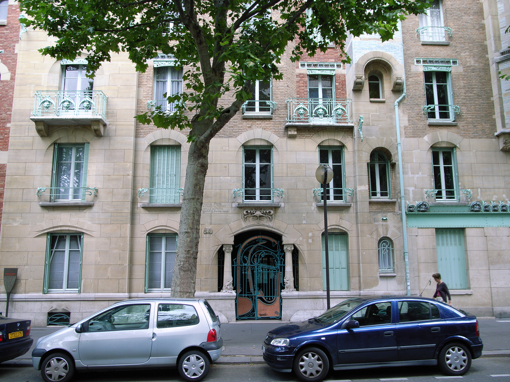
画像を拡大 ＋《カステル・ベランジェ》
- 作者
- エクトール・ギマール
- 制作時期
- 1895～1898年
- 所在地・所蔵
- パリ16区14 rue La Fontaine
- 素材・形式
- 建築
出典・画像について
パリ16区ラ・フォンテーヌ通り14番地にあるカステル・ベランジェの街路側の外観。2007年撮影。
画像出典：Steve Cadman / Wikimedia Commons
CC BY-SA 2.0
作品情報：画像出典・利用条件 · 作品・画像・利用条件 · 作品照合資料

《カステル・ベランジェの入口門》
- 作者
- エクトール・ギマール
- 制作時期
- 1895～1898年
- 所在地・所蔵
- パリ16区14 rue La Fontaine
- 素材・形式
- 建築
出典・画像について

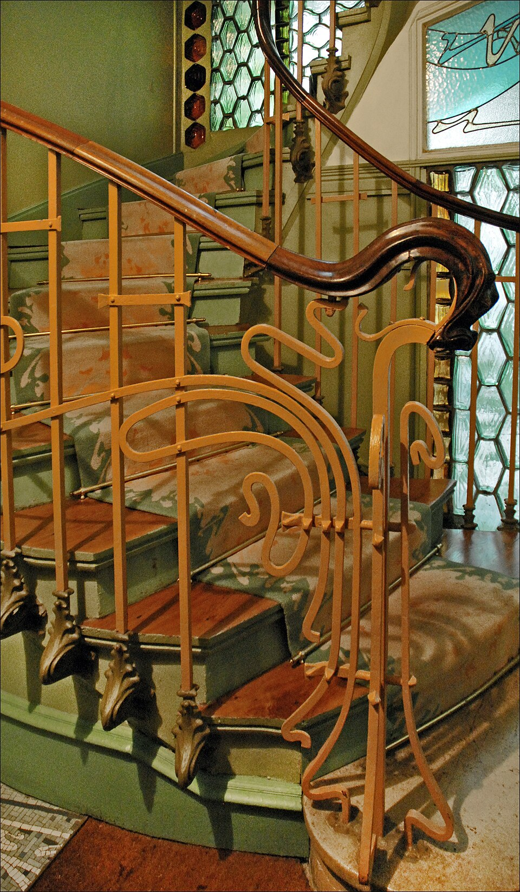
画像を拡大 ＋《カステル・ベランジェの主階段》
- 作者
- エクトール・ギマール
- 制作時期
- 1895～1898年
- 所在地・所蔵
- パリ16区14 rue La Fontaine
- 素材・形式
- 建築
出典・画像について
画像出典：Jean-Pierre Dalbéra
CC BY 2.0
作品情報：作品・画像・利用条件
ナポレオン三世とセーヌ県知事オスマンの改造で、パリの建物は外観が似通うようになっていました。それが1890年代後半には退屈と批判され、市庁舎主催の建築コンクールにつながります。新しい様式が認められる土壌が生まれたのです。
名を上げたギマールはパリ市の依頼を受け、百か所以上の地下鉄駅入口を担当しました。自然から着想した入口のデザインは変化に富み、細部の違いを見比べる楽しみがあります。伝統建築の強く残るフランスへ、新しい様式を持ち込むことに成功しました。

《アベス駅のギマール式入口》
- 作者
- エクトール・ギマール
- 制作時期
- 20世紀初頭の制作／1974年移設
- 所在地・所蔵
- パリ18区アベス駅
- 素材・形式
- 建築
出典・画像について

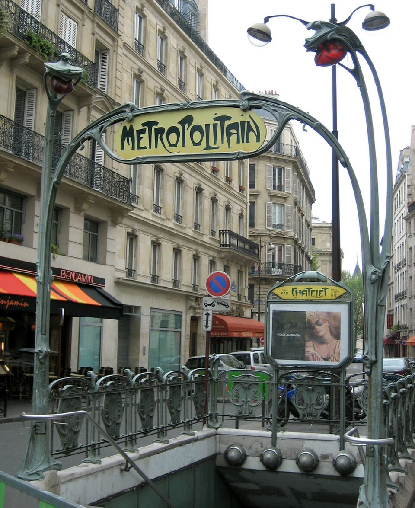
画像を拡大 ＋《シャトレ駅入口（動画の駅名表示と相違）》
- 作者
- エクトール・ギマール
- 制作時期
- 20世紀初頭
- 所在地・所蔵
- パリ、シャトレ駅
- 素材・形式
- 建築
出典・画像について
シャトレ駅のリヴォリ通りとラヴァンディエール＝サント＝オポルテューヌ通りの角にあるギマール設計の入口。
画像出典：Erin and Lance Willett / Wikimedia Commons
CC BY 2.0
作品情報：画像出典・利用条件 · 作品・画像・利用条件 · 作品照合資料
制作メモ
動画の背景にあるカフェの所在地から同じ入口と確認した。
外部確認：地下鉄入口の構成
元解説の「百以上すべてが異なる」という説明は、各入口が完全な一品制作だったという意味ではありません。規格化した鋳鉄部材を組み合わせ、製造・輸送・組立を容易にする設計でした。アベス駅の現入口は1974年に別駅から移設されています。もう一枚は画面の駅名看板がシャトレ駅で、動画のウーロップ駅という表示と食い違うため掲載を保留しました。
確認資料：MoMA：規格化した鋳鉄部材 · RATP：アベス駅の歴史
装飾芸術と工芸
装飾芸術とエミール・ガレ
動画 13:38～1890年代のフランスでは、絵画・彫刻・建築という主要な芸術と、家具などの装飾芸術の格差をなくす「芸術の統一」が試みられました。職人は芸術家より下に見られていましたが、1891年から国民美術協会のサロンで装飾芸術の出品が認められるようになります。
産業革命以後の家具や陶器には、ロココなどの過去の様式や日本などの異国趣味を模倣・混合するものが多く、現代生活のための芸術とはいえない状況がありました。職人が工場労働者へ移ったことも無関係ではないでしょう。モリスは建築から装飾まで一体で手掛けて隔たりをなくそうとしましたが、1890年代には家具や陶器そのものを芸術へ引き上げる方向が現れます。過去の様式との決別として、自然に学ぶ新しい造形が生まれました。
その動きを牽引したガラス工芸家がエミール・ガレです。自らをエベニスト、すなわち家具職人と称し、家具を芸術の域へ高めるとともに普及を目指しました。手作業のランプにも、その斬新さと美しさが現れています。ただし、初めからこの様式だけを作っていたのではなく、もともとはロココ趣味や異国趣味の作品も制作していました。
大小橙傘と黄蕾は確認したが同個体の写真利用条件未確定で保留。
《ひとよ茸ランプ》
- 作者
- エミール・ガレ
- 制作時期
- 1902年頃
- 所在地・所蔵
- 未確定
- 素材・形式
- ガラス工芸
出典・画像について
作品情報：作品・画像・利用条件
動画同個体候補は公式記録にあるが写真の掲載条件未確認で保留。
《草花文水差》
- 作者
- エミール・ガレ
- 制作時期
- 1884年頃
- 所在地・所蔵
- ポーラ美術館（006-0777、前回調査）
- 素材・形式
- ガラス工芸
出典・画像について
作品情報：作品・画像・利用条件
ガレの工房経営
動画 15:33～ガレは新しい造形へ進んでも、古い様式を求める顧客には柔軟に対応しました。ガレは一人の芸術家であると同時に、百人以上の職人を抱える工房の経営者でもあり、自分の好みだけでなく、一般的な注文にも応える必要があったのです。
目標はモリスと同じく、多くの人に作品を楽しんでもらい、暮らしを豊かにすることでした。芸術性を高めれば価格が上がり、大量に作れば一個に掛けられる手間が減ります。この産業と芸術の両立という難問に対し、ガレは一人ですべて作ることをやめ、工房で分業しました。優れた職人が役割を分けることで、手作りの質を保ちながら効率を上げ、価格を抑えたのです。
手間に思いを込めるというモリスの考えに比べ、ガレは効率と商業性を重んじました。どちらも簡単に肯定・否定できるものではありません。ガレが主に担ったのはデザインと制作の指揮で、実際に手を動かしたのは工房の職人です。それでも、植物学者でもあった彼の、植物や昆虫から着想する生命感に富む造形は固有のもので、工房で制作されたものもガレの作品と呼べるのです。
個体の写真利用条件未確認で保留。
《水差《ギアナの森》》
- 作者
- エミール・ガレ
- 制作時期
- 1903年頃
- 所在地・所蔵
- 個人蔵とする展覧会資料あり
- 素材・形式
- ガラス工芸
出典・画像について
作品情報：作品・画像・利用条件
各地への広がりとリバティ百貨店
動画 17:42～ガレは1904年、白血病のため58歳で亡くなりましたが、高品質な品と、それを量産する仕組みは芸術の普及へ貢献しました。アメリカでは宝石商ティファニーの息子ルイス・コンフォート・ティファニーが、この様式の第一人者として活躍します。ガレの成功に影響を受けたドーム兄弟も、生き生きとした工芸表現を生みました。

《藤のテーブルランプ》
- 作者
- ティファニー工房（意匠：クララ・ドリスコル）
- 制作時期
- 1902年頃
- 所在地・所蔵
- ヴァージニア美術館
- 素材・形式
- ガラス工芸
出典・画像について
同個体の写真掲載条件未確認で保留。
《菫（花器）》
- 作者
- ドーム兄弟
- 制作時期
- 1900年頃
- 所在地・所蔵
- 未確定
- 素材・形式
- ガラス工芸
出典・画像について
作品情報：作品・画像・利用条件
工芸の発展とともに、販売店も成長しました。1875年に宝石商アーサー・ラセンビー・リバティが開いたリバティ百貨店は、初めは異国の品を扱う店でした。アーツ・アンド・クラフツと出会ったリバティは、自国の様式を普及させるため、アーチボルド・ノックスやアーサー・ガスキンなどのデザイナーを保護し、作品を販売しました。

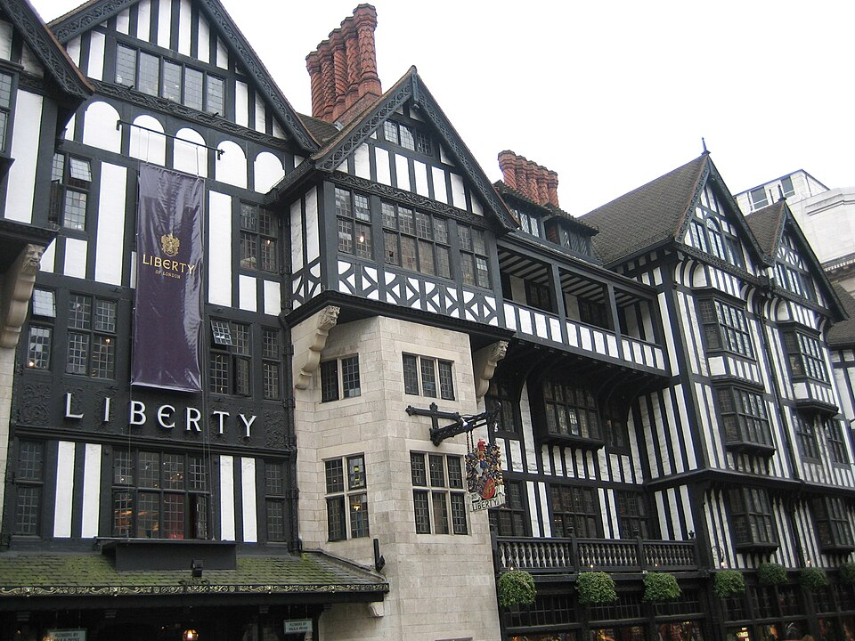
画像を拡大 ＋《リバティ百貨店の現店舗》
- 作者
- エドウィン・トーマス・ホール、エドウィン・スタンリー・ホール
- 制作時期
- 1924年（創業1875年）
- 所在地・所蔵
- ロンドン、グレート・マールバラ・ストリート
- 素材・形式
- 建築
出典・画像について
同個体の写真利用条件未確認。類似作で代用しない。
《オパールとエナメルのコーム》
- 作者
- アーチボルド・ノックス（動画表示）
- 制作時期
- 1900年頃
- 所在地・所蔵
- 未確定
- 素材・形式
- 装身具
出典・画像について
作品情報：作品・画像・利用条件
1890年に開設したパリ支店などを通じ、影響はヨーロッパへ広がります。イタリアの呼称スティーレ・リバティは、リバティ百貨店のスタイルという意味でもあり、店が他国の新しい様式を開花させるほどの影響力を持ったことを示します。制作する人だけでなく、販売・支援する人も、芸術の広がりを支えていました。
ポスターの芸術
広告の芸術とロートレック
動画 19:28～販売店とともに広告の重要性も高まりました。19世紀後半から20世紀初頭にはカラー印刷の技術が向上し、店や商品の雰囲気を伝えるポスターが生まれます。美しさから収集の対象にもなり、フランスではロートレックとミュシャが、装飾ポスターを通じてこの様式を代表する芸術家となりました。

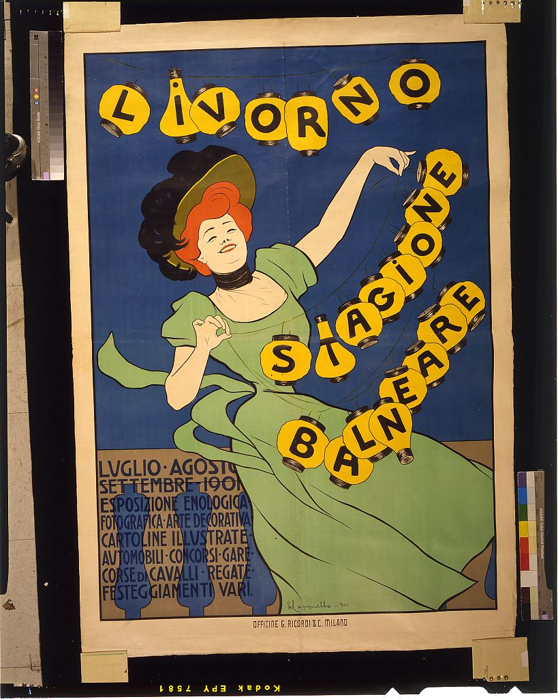
画像を拡大 ＋《リヴォルノの浴場のポスター》
- 作者
- レオネット・カピエッロ（画面表示）
- 制作時期
- 1901年
- 所在地・所蔵
- 米国議会図書館（LCCN 2004665780）
- 素材・形式
- ポスター
出典・画像について
リヴォルノの海水浴シーズンを宣伝する1901年の石版ポスター。黄色い提灯で題字を表し、ミラノのリコルディ社が印刷した。
画像出典：Leonetto Cappiello / Library of Congress, Prints and Photographs Division
Public domain
作品情報：画像出典・利用条件 · 作品・画像・利用条件 · 作品照合資料
名家出身のアンリ・ド・トゥールーズ＝ロートレックは、骨の形成に関わる障害を抱えながらも、優れたデッサン力で画家を志しました。初期にはゴッホと交流し、その肖像も描いています。1891年から制作したポスターは、パリの歓楽街を案内し、街を華やかに彩りました。絵だけでなく、文字の形にも魅力があります。

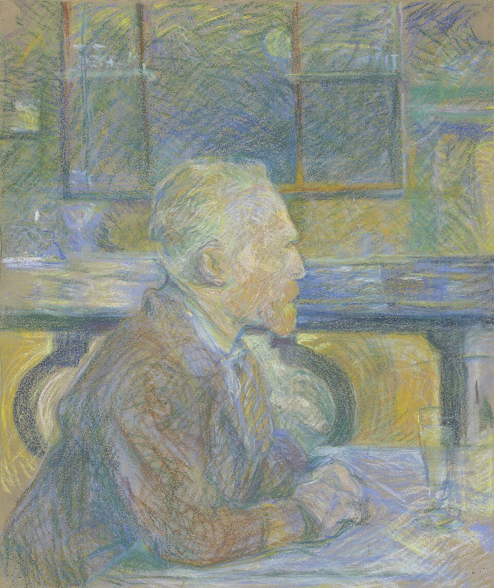
画像を拡大 ＋《フィンセント・ファン・ゴッホの肖像》
- 作者
- アンリ・ド・トゥールーズ＝ロートレック
- 制作時期
- 1887年
- 所在地・所蔵
- ファン・ゴッホ美術館
- 素材・形式
- パステル

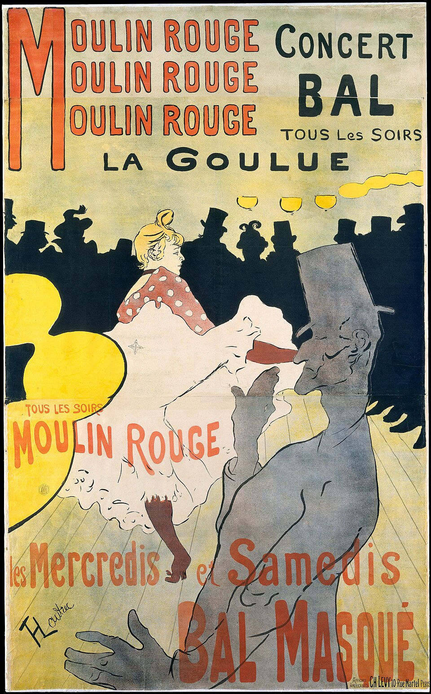
画像を拡大 ＋《ムーラン・ルージュ：ラ・グーリュ》
- 作者
- アンリ・ド・トゥールーズ＝ロートレック
- 制作時期
- 1891年
- 所在地・所蔵
- メトロポリタン美術館（32.88.12）
- 素材・形式
- ポスター
身体的な障害による差別を受け、夜の世界へ入り浸ることも多かったといいます。そのため歓楽街をよく知り、作品へ雰囲気を映せたのでしょう。独自の画風はポスト印象主義に分類されることもあります。ダンスホールを描いた作品には、同じく踊り子を描いたドガの影響が見られますが、輪郭を明確な線で形作る表現は、印象派を超えるものといえるでしょう。

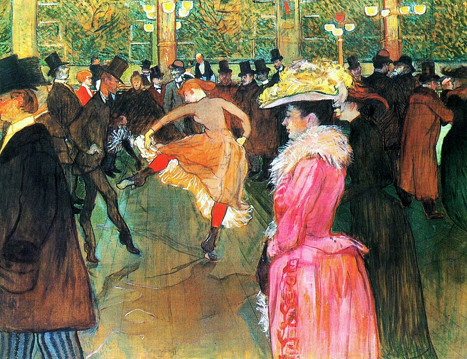
画像を拡大 ＋《ムーラン・ルージュにて、ダンス》
- 作者
- アンリ・ド・トゥールーズ＝ロートレック
- 制作時期
- 1890年
- 所在地・所蔵
- フィラデルフィア美術館
- 素材・形式
- 油彩画
出典・画像について
動画表示1892年に対し同定した作品は1890年。シカゴ所蔵の別作品とは異なる。
画像出典：Henri de Toulouse-Lautrec
Public domain（PD-Art／PDM）
作品情報：作品・画像・利用条件
多くの名作を残す一方、差別のストレスから酒に溺れてアルコール依存に苦しみ、脳出血によって37歳で亡くなりました。その活動は、ポスターを芸術作品へ引き上げたものとして評価されています。
ミュシャの女性と植物
動画 21:24～ロートレックに並び、日本でも人気を持つのがアルフォンス・ミュシャです。やや遅れてポスターの依頼を受け、ジャポニスムの影響を受ける平面性と細密描写で人気を得ました。女優サラ・ベルナールを描いたポスターによって、アール・ヌーヴォーの旗手となります。

《ジスモンダ》
- 作者
- アルフォンス・ミュシャ
- 制作時期
- 1894年（動画表示1895年）
- 所在地・所蔵
- 個人蔵（Commons掲載個体）
- 素材・形式
- ポスター
出典・画像について
動画表示1895年に対し、画像資料の制作年1894年を記載。
画像出典：Art Renewal Center / Wikimedia Commons
Public domain（PD-Art／PDM）
作品情報：作品・画像・利用条件
制作メモ
配信画像は低解像度です。
その後は女性と植物を用いたデザインで、多くの商品の広告に貢献します。JOB社のたばこ関連広告では、女性が手にたばこを持ちます。魅惑的な女性像はパリの女性の購買意欲を高め、大人の女性が持つ嗜好品というイメージを広めたといいます。ロートレックとミュシャは、それまで収集対象とされなかったポスターを芸術の域へ引き上げ、広告の重要性が増す時代を牽引しました。
 画像を拡大 ＋
画像を拡大 ＋
《JOB（巻紙の広告ポスター）》
- 作者
- アルフォンス・ミュシャ
- 制作時期
- 1896年
- 所在地・所蔵
- フランス国立図書館
- 素材・形式
- ポスター
出典・画像について
たばこそのものではなく巻紙の広告。
画像出典：Bibliothèque nationale de France / Wikimedia Commons
Public domain（PD-Art／PDM）
作品情報：作品・画像・利用条件
最盛期と衰退
万国博覧会から第一次世界大戦へ
動画 22:35～1890年代に始まった運動は、1900年のパリ万国博覧会で最盛期を迎えました。日本にも広がり、工芸家は技巧を重視する職人主義から、創作性を重んじる作品へ向かいます。日本に学んだ側面を持つアール・ヌーヴォーが、巡り巡って日本へ戻る関係でもありました。
原作と写真権利は別。写真利用条件未確認で保留。
《鶏梅蒔絵文庫》
- 作者
- 浅井忠・杉林古香
- 制作時期
- 1906年
- 所在地・所蔵
- 京都国立近代美術館（Lc0043、前回公式記録）
- 素材・形式
- 漆工
出典・画像について
作品情報：作品・画像・利用条件
1910年代には運動が急速に衰えます。1914年に始まる第一次世界大戦は、敗戦国ドイツだけでなく、戦勝国イギリスやフランスも傷つけました。急いで復興する国々は、装飾性より実用性と大量生産を求めます。ガレのように手作りで量産する仕組みを作っても、機械の力が必要となりました。歴史的な変化がデザインにも反映され、次にはアメリカを中心に、工業を取り入れたアール・デコというデザイン革命が起こります。
要点まとめ
- アール・ヌーヴォーは1890年代を中心に栄えた、アーツ・アンド・クラフツの精神を引き継ぐデザイン運動。フランス語で「新しい芸術」を意味し、美術商ジークフリート・ビングの画廊「メゾン・ド・ラール・ヌーヴォー」が名の由来。
- 特徴は植物などの有機的な曲線と職人の手作りの重視で、鉄などの新素材も積極的に使った。ドイツではユーゲントシュティール、イタリアではスティーレ・リバティ、イギリスではモダン・スタイルと呼ばれた。
- ヴィオレ＝ル＝デュクはゴシック建築の構造を合理的に捉え、新素材と統合しようとした。その理論に影響を受けたガウディは、自然の構造をサグラダ・ファミリアに生かした（モデルニスモ）。
- 1889年のパリ万国博覧会のエッフェル塔は鉄の可能性を示した。ベルギーのオルタが設計したタッセル邸は最初期のアール・ヌーヴォー建築で、ヴァン・デ・ヴェルデは後にドイツ工作連盟の設立に関わった。
- フランスのギマールはカステル・ベランジェでパリ市のファサード・コンクールに受賞し、百か所以上の地下鉄駅入口を手がけた。
- 1890年代のフランスでは、主要芸術と装飾芸術の格差をなくす「芸術の統一」が試みられた。ガラス工芸家エミール・ガレは百人以上の職人の工房で分業し、手作りの質を保ちながら価格を抑えた。
- アメリカのルイス・コンフォート・ティファニー、ドーム兄弟も工芸で活躍し、リバティ百貨店が作品の販売と普及を支えた。
- カラー印刷の向上でポスターが芸術となり、パリの歓楽街を描いたロートレックと、女優サラ・ベルナールのポスターで知られるミュシャが代表となった。
- 運動は1900年のパリ万国博覧会で最盛期を迎え、日本の工芸にも影響した。第一次世界大戦後は実用性と大量生産が求められて衰え、アール・デコが起こった。
確認問題
答えを考えてから開いてください。選択問題は選ぶとすぐ正誤と解説が出ます（選択肢の順番は開くたびに変わります）。各問題のリンクから該当の章や作品カードへ戻れます。
選択問題：0／5問回答・正解0
A. 一問一答答えを考えてから開く
問11895年にパリで画廊「メゾン・ド・ラール・ヌーヴォー」を開き、アール・ヌーヴォーの名をフランスへ広めた美術商は誰か。
答えを見る
問2自らをエベニスト（家具職人）と称し、百人以上の職人を抱える工房で分業して質と効率を両立させたガラス工芸家は誰か。
答えを見る
問3パリ市の依頼を受け、自然から着想した百か所以上の地下鉄駅入口を担当した建築家は誰か。
答えを見る
B. 4択選ぶとすぐ正誤と解説
問4ドイツでは、アール・ヌーヴォーは何と呼ばれたか。
→ 本文で確認（有機的な曲線と各国への広がり）
問5最初期のアール・ヌーヴォー建築として知られる、ブリュッセルのタッセル邸を設計した建築家は誰か。
→ 本文で確認（オルタのタッセル邸）
問61910年代にアール・ヌーヴォーが急速に衰えた背景として正しいものはどれか。
→ 本文で確認（万国博覧会から第一次世界大戦へ）
C. 図版問題画像を見て答える
問7このたばこ巻紙の広告ポスターの作者は誰か。
答えを見る
《JOB》、1896年。魅惑的な女性像で、たばこを大人の女性が持つ嗜好品というイメージを広めたという。サラ・ベルナールを描いたポスターでアール・ヌーヴォーの旗手となった。
→ 作品カードで確認
問8このポスターの作者は誰か。
→ 作品カードで確認
問9この建築の名前と設計者はどれか。
→ 作品カードで確認